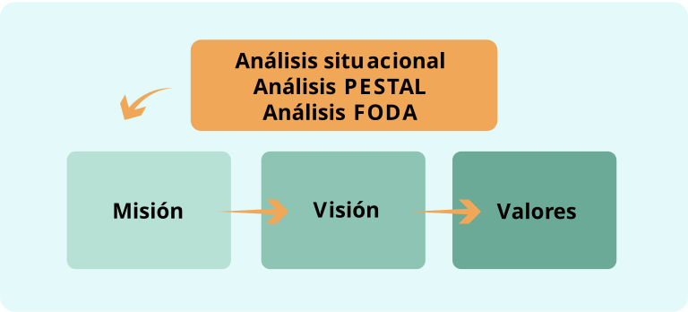

Etapa de elaboración y validación
Cuidando el crecimiento y dando forma al jardín
Paso 6:
Definición del marco filosófico institucional
En este paso, se construyen o actualizan los elementos que darán identidad y dirección a la municipalidad: la misión, la visión y los valores institucionales. Estos conceptos guiarán todas las acciones y decisiones incluidas en el PDM.
Dicho ejercicio es clave al vislumbrar un futuro ideal para la municipalidad, tomando en cuenta momentos de desempeño óptimo y dificultades identificadas durante la etapa diagnóstica.
Objetivos del marco filosófico
- Utilizar los resultados del diagnóstico para planificar estratégicamente.
- Revisar y ajustar la misión y visión.
- Definir los valores institucionales.
Este enfoque permitirá comprender mejor el papel de la municipalidad y la dirección que tiene a futuro.
Figura 3. Esquema de trabajo para la definición del marco filosófico

Fuente: Elaboración propia
Responsabilidades
El proceso será liderado por el ETM, que ha sido designado para la elaboración del PDM. Por medio de dinámicas de trabajo en equipo, se solicita a los participantes del ETM realizar el ejercicio de revisión o construcción del marco filosófico de la institución.
Acciones
A. Definición de la misión
¿Qué es la misión?
La misión es una descripción de la razón de ser de la municipalidad; establece su quehacer institucional, los bienes y servicios que entrega, las funciones principales que la distinguen y la hacen diferente de otras instituciones y justifican su existencia (ILPES-CEPAL, Armijo 2011, p. 29).
En otras palabras, la misión constituye lo que debemos hacer todos los días para cumplir con nuestra visión. La misión de una organización; en este caso, una municipalidad,
- Define ¿cuál es su razón de ser?, ¿qué está llamada a ser y a hacer?
- Expresa sus particularidades, su identidad, ¿lo que hacen, para qué lo hacen y por qué?
- Remite a las características de su municipalidad, de sus recursos, de sus experiencias, de su entorno social, económico, político, otros.
- Se construye creando una oración breve, clara y precisa.
Según ILPES-CEPAL (2009), la utilidad de poseer una misión concertada entre el equipo directivo y la comunicación de esta a los funcionarios, usuarios y ciudadanos:
- Establece el marco que justifica la intervención pública en el ámbito de responsabilidad.
- Tiene la capacidad de mantener el foco directivo en lo importante.
- Logra encauzar los apoyos políticos y capacidades administrativas de la institución.
- Muestra a los grupos de interés la creación de valor público esperado.
¿Cuándo no es necesario reformular la misión?
- No se han realizado cambios a la ley constitutiva de la entidad (Constitución Política, art. 169).
- No haya habido cambios fundamentales a las funciones y atribuciones de la institución (Código Municipal).
- La declaración de misión represente exactamente lo que la institución produce.
- La persona titular de la alcaldía y su equipo de trabajo se mantienen. Esto no significa que, ante cambio de autoridades, deba cambiarse la misión; no obstante, como recomendación, podría sugerirse, como uno de los primeros ejercicios encomendados a la nueva administración de la municipalidad, consultar si está de acuerdo en cómo está redactada la misión institucional sobre la cual es responsable y debe rendir cuentas.
¿En qué casos es necesario establecer una nueva misión?
- Si no ha habido antes un proceso de elaboración, identificación o revisión de la misión.
- Si la redacción de la misión sólo explica lo establecido en el ámbito de la ley que crea la municipalidad, y no explica claramente qué produce, para quienes y qué se espera como resultado.
- Si la municipalidad ha sufrido redefiniciones importantes en los ámbitos de su competencia o hay alguna declaración política clave de prioridad pública que afecta a la entidad.
Si la municipalidad tiene su misión definida
Analice si la misión institucional que su municipalidad ha definido previamente es compatible con las siguientes preguntas. Recuerde que estas preguntas forman parte del diagnóstico institucional que se encuentra en proceso.
| ¿Qué cambios son necesarios de llevar a cabo en nuestra municipalidad? | Se refiere a los cambios necesarios de llevar a cabo en nuestra municipalidad |
| ¿Cómo mejoraremos el desempeño? | Considere las opciones para mejorar el desempeño institucional |
| ¿Qué diferencia queremos hacer? | Analice las diferencias que creemos necesarias de hacer |
| ¿A qué elementos o factores críticos debemos responder? | Son los elementos o factores críticos a los cuales debe responder la municipalidad |
Si la municipalidad no tiene su misión definida
- Definir en forma participativa la misión de la municipalidad para la cual labora.
- Tome en consideración los resultados obtenidos hasta ahora en el trabajo diagnóstico.
- Para iniciar la definición de la misión, considere previamente lo siguiente:
- La normativa en torno al régimen municipal (art. 169 y 170, Constitución Política, y arts. 2, 4, 5, Código Municipal).
A continuación, se presentan seis preguntas básicas para identificar la misión institucional:
| ¿Quiénes somos? | Permite preguntarse acerca de la identidad institucional. |
| ¿A qué nos dedicamos? | Abre la reflexión sobre las principales necesidades por satisfacer. |
| ¿En qué nos diferenciamos de otras municipalidades con actuaciones parecidas en algunos temas relevantes (por ejemplo, ambiente, ordenamiento territorial)? | Ayuda a definir los principales productos o servicios que deben entregarse. |
| ¿Para quién lo hacemos? ¿Cuál es la población objetivo y la cobertura actual? | Permite pensar en los principales beneficiarios. |
| ¿Qué valores respetamos? ¿Por qué y para qué hacemos lo que hacemos? ¿Cómo es la percepción de los involucrados (internos y externos)? |
Ayuda a definir los principales valores institucionales. |
Cuadro 13. Características que debe tener la misión institucional
| Elemento | Descripción |
|---|---|
| Ser ambiciosa | Debe ser un reto |
| Ser clara | De fácil interpretación |
| Ser sencilla | Que todos y todas la comprendan |
| Ser corta | Que se pueda recordar fácilmente |
| Ser compartida | Consensuada o validada por todos los integrantes de la organización (municipalidad) |
Fuente: Elaboración propia, a partir de Cortadellas, 2009, citado en Berretta y Kaufmann, 2011, p. 20.
Importante
Defina, en no más de cinco líneas, la misión institucional.
B. Definición de la visión institucional
¿Qué es la visión?
La visión corresponde al futuro deseado de la organización. Se refiere a cómo quiere ser reconocida la entidad; representa los valores con los cuales se fundamentará su accionar público.
La visión responde a la pregunta ¿cómo queremos ser reconocidos? Para ello, considere los siguientes aspectos:
- Imagen de futuro, condición deseada para la municipalidad en un lapso de cinco años.
- Los actores municipales la construyen de manera colectiva y concertada.
- Se define, imagina, proyecta y visualiza el horizonte a donde quiere llegar la municipalidad en el próximo quinquenio.
- Se requiere que la visión sea clara, precisa y que, además, tenga poder de animar y de entusiasmar a quienes son responsables de alcanzarla. Es el puente que une el futuro institucional con el presente.
- Permite trabajar en conjunto, con direccionalidad, por una municipalidad que sea capaz de responder a las aspiraciones, demandas y potencialidades del cantón.
Importancia de la declaración de visión para la gestión institucional
- Compromete públicamente las aspiraciones institucionales, proporcionando un efecto de cohesión a la organización.
- Permite distinguir y visualizar el carácter público y cómo la intervención gubernamental se justifica, desde el punto de vista de lo que entrega a la sociedad.
- Complementa el efecto comunicacional de la misión y enmarca el quehacer institucional en los valores que la sociedad espera de la entidad pública.
Si usted trabaja en una municipalidad con su misión definida, se recomienda establecer una nueva visión institucional para lograr el cambio propuesto.
Para iniciar la definición de la visión, tome en cuenta previamente lo siguiente:
- El perfil o estado de situación de la municipalidad.
- Las aspiraciones y propuestas de desarrollo que emanan de la ciudadanía y que perfilan una ruta cantonal de desarrollo humano.
A continuación, estas son algunas preguntas que orientan la definición de la visión:
- ¿Qué y cómo queremos ser dentro de cinco años? Permite pensar la imagen de futuro (imagen objetivo).
- ¿En qué nos queremos convertir? Ayuda a reflexionar sobre el desafío de cambio.
- ¿Para quién trabajaremos? Posibilita crear la imagen del ciudadano o usuario en el futuro.
- ¿En qué nos diferenciaremos? Ayuda a pensar en la identidad futura.
- ¿Qué valores respetaremos? Permite establecer los valores futuros.
- ¿Cómo imaginamos o deseamos que sea la municipalidad en un año determinado?
Cuadro 14. Características que debe tener la visión Institucional
| Elemento | Descripción |
|---|---|
| Ser realizada con visión de futuro | No con el objetivo de mejorar el pasado |
| Ser coherente | Con la misión |
| Ser ambiciosa | Porque se trata de un reto, pero, a su vez, debe ser realista y viable |
| Ser clara | De fácil interpretación |
| Ser sencilla | Para que todos y todas a comprendan |
| Ser atractiva | Para provocar ilusión |
| Ser compartida | Consensuada o validada por los miembros de la organización (municipalidad) |
Fuente: Elaboración propia, a partir de Cortadellas, 2009, citado en Berretta y Kaufmann, 2011, p. 22.
Importante
Defina, en no más de cinco líneas, la visión a la que aspira la municipalidad.
Brevedad, claridad y precisión. Se redacta en tiempo verbal presente. Es una expectativa, se espera que, en cinco años, el presente de ese gobierno local sea tal y como se ha descrito.
C. Definición de los valores institucionales
Los valores son cualidades o características deseables o esperables en el comportamiento de las personas, y son culturalmente construidos y trasmitidos. Las personas que integran una sociedad los incorporan, a través de la socialización, como guía deseable para la acción y como normas para la conducta.
Para quienes trabajan en una municipalidad que tiene definida su misión y visión, es obligatorio definir los valores:
- Las aspiraciones que se plantean pasan por las actitudes de las personas.
- Las personas deben estar convencidas de generar cambios.
- Los valores son compromisos y convicciones.
Cuadro 15. Decisiones que deben tomarse con base en valores organizativos
| Elemento | Detalle |
|---|---|
| Prioridades | ¿Cuáles son nuestros valores propios? |
| Identidad | ¿Qué valor(es) queremos que nos distinga? |
| Coherencia | ¿Es consistente el trabajo con respecto a los valores establecidos? |
Fuente: Elaboración propia, a partir de Cortadellas, 2009, citado en Berretta y Kaufmann, 2011, p. 23.
Una vez analizado lo anterior, defina, al menos, cinco valores en orden jerárquico en los que la municipalidad aspira a desarrollar esfuerzos para alcanzar su misión y visión.
| VALORES INSTITUCIONALES |
|---|
| 1. |
| 2. |
| 3. |
| 4. |
| 5. |
Estrategias sugeridas
- Taller de Identidad Institucional: realice una dinámica donde cada participante complete frases como:
“Estamos aquí para…” (misión), “Queremos llegar a ser…” (visión), “Nos guiamos por…” (valores). - Lluvia de palabras colectivas: defina los valores a partir de palabras clave propuestas por el equipo y ciudadanos, agrupándolas en ejes comunes.
Reflexione
¿Qué tan alineada está nuestra misión con las necesidades reales de la ciudadanía? ¿Qué valores guían nuestras decisiones como institución?
Resultados esperados
- Una misión clara que indique el propósito de la municipalidad.
- Una visión inspiradora que marque el rumbo para el próximo quinquenio.
- Un conjunto de valores que refuercen la cultura organizacional.
Esos tres elementos deben ser claros, participativos y alineados, para fortalecer la cohesión interna y el compromiso con el desarrollo del cantón. Definir el marco filosófico institucional es un paso clave para orientar el PDM y motivar al equipo municipal a trabajar con un propósito compartido.
Importante
Cada acción constituye un requisito del siguiente, por lo que le invitamos a desarrollarlas todas.